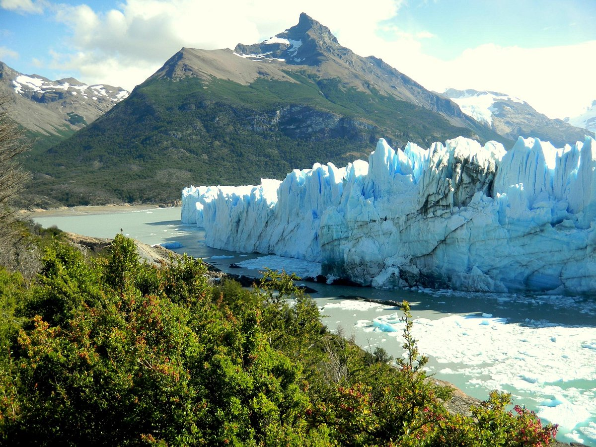

¡Descubre la pasión y la diversidad de Argentina con nosotros! Desde las majestuosas cataratas del Iguazú hasta los picos nevados de la Patagonia, Argentina te espera con paisajes impresionantes, una rica cultura y una deliciosa gastronomía. Sumérgete en la energía vibrante de Buenos Aires, donde el tango resuena en las calles, el fútbol es una religión y la arquitectura histórica te transporta a tiempos pasados. Embárcate en una aventura en la vasta extensión de la Pampa Argentina, donde la vida rural te conecta con la autenticidad del campo. En Argentina, cada rincón ofrece una experiencia única, desde la majestuosidad de los glaciares en el sur hasta la calidez de su gente en el norte. ¡Ven y descubre la magia de Argentina con nosotros!
Las Cataratas del Iguazú
Ubicadas en la provincia de Misiones, en el noreste de Argentina, las Cataratas del Iguazú son una de las maravillas naturales más impresionantes del mundo. Con sus imponentes cascadas rodeadas de exuberante vegetación, este sitio es una experiencia inolvidable para los amantes de la naturaleza y la aventura.
La Ciudad de Buenos Aires
La capital argentina es una metrópolis vibrante y llena de contrastes. Desde los elegantes barrios de Recoleta y Palermo hasta el histórico barrio de San Telmo y el colorido barrio de La Boca, Buenos Aires ofrece una mezcla única de cultura, arte, gastronomía y vida nocturna. Además, es el lugar perfecto para experimentar la pasión del fútbol argentino en estadios como La Bombonera y el Monumental.

El Glaciar Perito Moreno
Situado en el Parque Nacional Los Glaciares, en la provincia de Santa Cruz, el Glaciar Perito Moreno es una maravilla natural impresionante. Con sus imponentes paredes de hielo que se elevan sobre el Lago Argentino, este glaciar ofrece vistas espectaculares y la oportunidad de presenciar desprendimientos de hielo espectaculares.
Itinerario de 5 días y 4 noches en Argentina
Día 1: Llegada a Buenos Aires
- Llegada al Aeropuerto Internacional de Ezeiza.
- Visita al barrio de La Boca, conocido por sus coloridas casas y su historia cultural.
- Cena en un restaurante local con espectáculo de tango.
Día 2: Explorando Buenos Aires
- Recorrido por el centro de la ciudad, incluyendo la Plaza de Mayo y la Casa Rosada.
- Almuerzo en un tradicional café porteño.
- Tarde libre para compras en la avenida Santa Fe.
Día 3: Excursión a las Cataratas del Iguazú
- Visita a las impresionantes Cataratas del Iguazú, una de las maravillas naturales del mundo.
- Recorrido por los circuitos superior e inferior del Parque Nacional Iguazú.
- Cena en un restaurante con vista a las cataratas.
Día 4: Regreso a Buenos Aires
- Vuelo de regreso a Buenos Aires.
- Tarde libre para actividades adicionales o compras de último minuto.
- Cena de despedida en un restaurante especializado en cocina argentina.
Día 5: Último día y regreso
- Mañana libre para actividades adicionales o visitas de último momento.
- Traslado al Aeropuerto Internacional de Ezeiza para tomar el vuelo de regreso.
Costos de Viaje en Argentina
- Traslados: Los traslados pueden costar entre 20 a 50 dólares por trayecto, dependiendo del medio de transporte elegido.
- Hospedaje: Los precios oscilan entre 50 a 150 dólares por noche, según la ubicación y categoría del alojamiento.
- Entradas a sitios turísticos: Las entradas suelen estar entre 10 a 20 dólares por persona.
- Alimentación: Se estima un gasto de 15 a 30 dólares por comida, dependiendo del lugar y el tipo de restaurante.